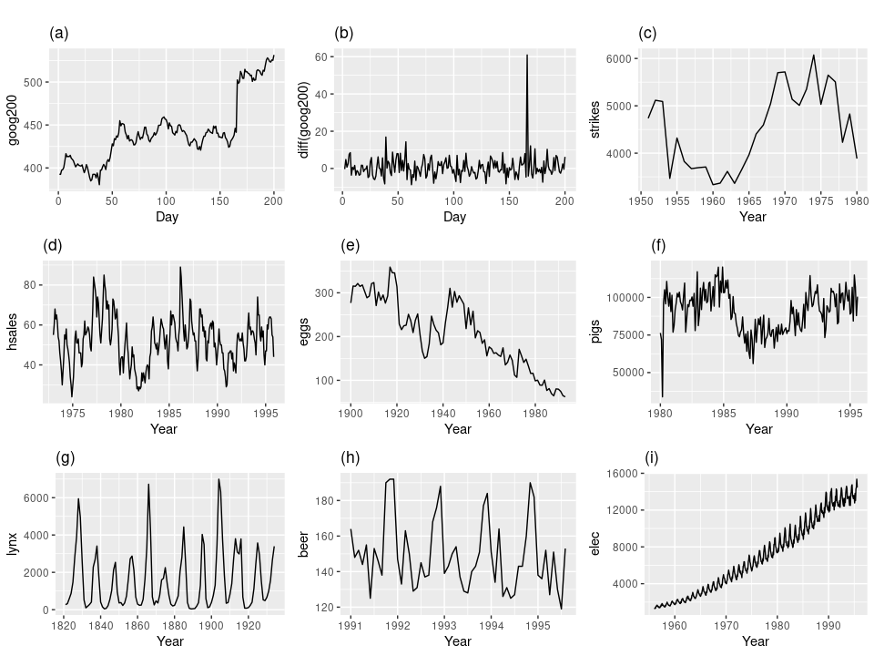
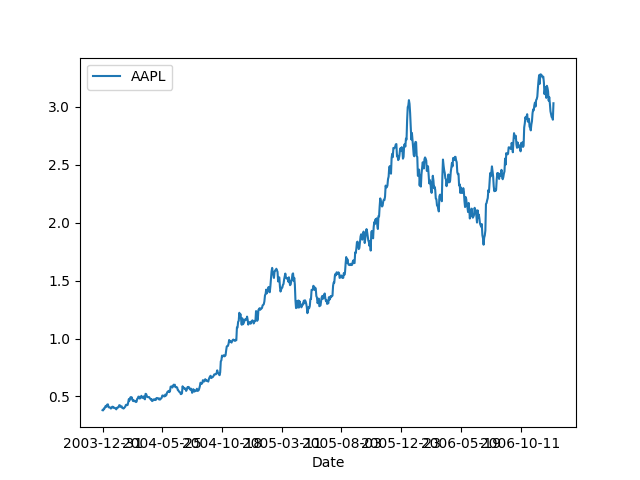
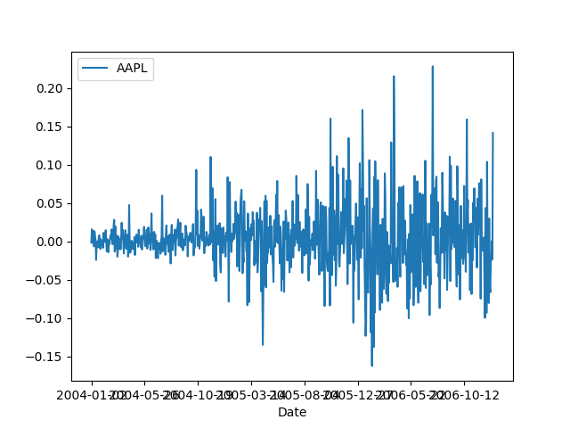
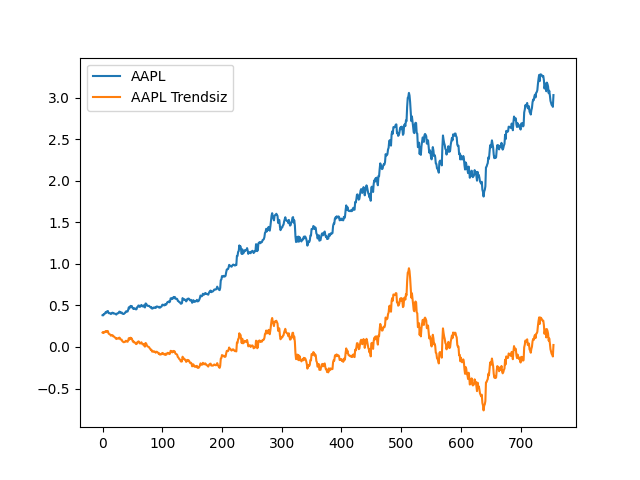
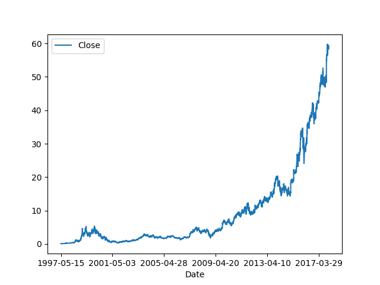
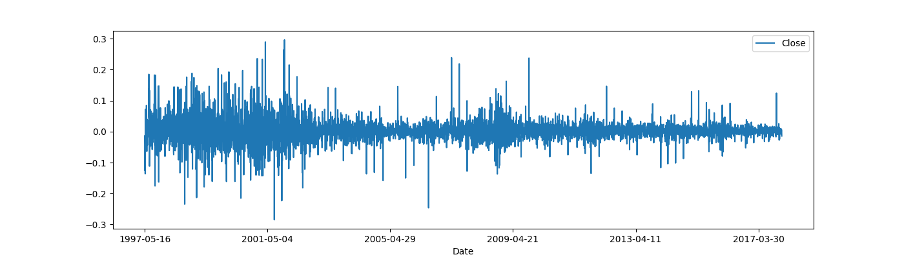
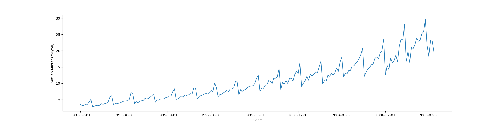
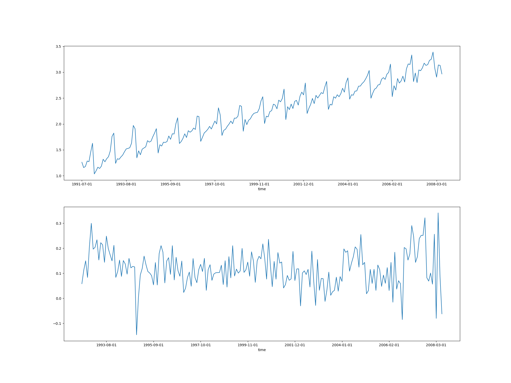

Daha fazla ilerlemeden bu yazıda bazı veri işlem numaraları göreceğiz.
Durağanlık
Yapay Öğrenim (machine learning) ya da diğer istatistiki tahminsel yaklaşımlar çoğunlukla işledikleri verinin durağan olmasının beklerler [1]. Durağanlık zaman serisindeki her veri noktasının diğerleri ile aynı dağılıma sahip olması demektir. Bu durum yoksa algoritmalar iyi çalışmayabilir. Zaman serilerinde durağanlık olmaması pek çok kez ortaya çıkar; serilerde bazen sezonsallık vardır, bazen trend mevcuttur vs. O zaman durağan olmayan serileri durağan hale getirmek zaman serisi analizinde önemli bir kabiliyettir.
Şimdi alttaki resimlere bakalım ve hangisinin durağan olduğunu tahmin etmeye uğraşalım.

Durağan serilerin sabit varyansı olduğuna göre a,c,e,f ve i resimlerini atabiliriz. Bu seriler ya net bir yukarı ya da aşağı trend içeriyorlar ya da seviyelerde değişim var, mesela f örneğindeki gibi.
d ve h içinde sezonsal kalıplar var, onları da atıyoruz. Ya peki g? Sanki sezonsal bir kalıp varmış gibi duruyor fakat bu doğru değil. Bu seri doğadaki bir canlının nüfusunu gösteriyor, yiyecek azalınca canlılar azalıyor, yiyecek varsa nüfus artıyor, bu tür tekrar eden bir süreç sezonsallıkla aynı şey değil. Sezonsallık varsa herhangi bir zaman diliminde ne olacağını kesinlikle biliyoruz. Kıyasla nüfus artış azalış tekrarı tahmin edilebilir değil.
O zaman eldeki tek durağan seri b ve g.
Testler
Durağanlığı bulmak için bazı istatistiki testler var, bu testlere birim kök (unit root) testleri adı veriliyor, en popüleri olanı eklemlenmiş Dickey-Fuller testi. Bu teste göre sıfır hipotezi serinin durağan olmadığıdır, o zaman bu hipotez reddedilirse, mesela 0.05, ya da 0.01’den az bir p-değeri elde edilirse, bu demektir ki elde bir durağan seri var.
Örnek olarak elmas verisine bakalım,
import seaborn as sns
from statsmodels.tsa.stattools import adfuller
diamonds = sns.load_dataset("diamonds")
test_results = adfuller(diamonds["price"])
print(f"ADF test statistic: {test_results[0]}")
print(f"p-value: {test_results[1]}")
print("Critical thresholds:")
for key, value in test_results[4].items():
print(f"\t{key}: {value}")ADF test statistic: -8.114930668315607
p-value: 1.1980457313376217e-12
Critical thresholds:
1%: -3.430471308341908
5%: -2.8615936158814588
10%: -2.566798537945544p-değerine bakıyoruz, neredeyse sıfır. O zaman H0 reddedildi, seri durağan.
Şimdi büyük ihtimalle durağan olmayan bir seriye bakalım, Apple şirketinin hisse senet fiyati bu,
import pandas as pd
df = pd.read_csv('AAPL.csv',index_col=0)
df.plot()
plt.savefig('tser_008_data_04.png')
Şeride açık bir yukarı doğru trend var. Test edelim,
adfuller(df)[1]Out[1]: np.float64(0.9069640607490215)Sıfırdan çok uzak bir p-değeri bu, demek ki seri durağan değil.
Bir seriyi durağan hale getirmek için kullanılan en basit yöntem fark almaktır, yani serideki her veri noktasını bir öncekinden çıkartmak. Mesela üstteki AAPL senet verisi için bunu yaparsak ve testi tekrar uygularsak,
import pandas as pd
d1 = df.diff().dropna()
d1.plot()
plt.savefig('tser_008_data_03.png')
from statsmodels.tsa.stattools import adfuller
adfuller(d1)[1]Out[1]: np.float64(9.132206809895174e-19)p-değeri çok küçük, demek ki farkı alınmış seri durağan hale geldi.
Peki fark alarak hangi matematiksel işlemi uygulamış oluyoruz? Bu işlemin ne olduğunu görmek zor değil, fark alma işlemlerini bir türevin yaklaşık hali olarak görebiliriz,
\[ \frac{f(x)-f(x+\Delta)}{\Delta} \]
ki \(\Delta\) değerleri 1’de sabitlenmiş oluyor (ve yokolur) ve bir sonraki \(f(x)\)’e ulaşmak için sabit artış farzedersek o zaman zaman serisinde fark almak bir tür türev almakla eşdeğerdir [2]. Bu sebeple basit fark işlemi trendi çıkartır, eğer elde gürültülü bir \(y = ax + b\) var ise türev sonrası (gürültülü) \(a\) elde edilmesi gibi..
Fark işlemleri birkaç derecede yapılabilir, mesela iki kez türev
almaya eşdeğer olan farkın farkını almak, diff(periods=2)
ile yapılabilir. Birkaç örneği yanyana görelim,
pd.set_option('display.max_columns', None)
df = pd.read_csv('AAPL.csv',index_col=0)
df['diff_1'] = df.AAPL.diff(periods=1)
df['diff_2'] = df.AAPL.diff(periods=2)
df['diff_3'] = df.AAPL.diff(periods=3)
print (df[['diff_1','diff_2','diff_3']]) diff_1 diff_2 diff_3
Date
2003-12-31 NaN NaN NaN
2004-01-02 -0.001607 NaN NaN
2004-01-05 0.015893 0.014286 NaN
2004-01-06 -0.001429 0.014464 0.012857
2004-01-07 0.008929 0.007500 0.023393
... ... ... ...
2006-12-22 -0.025000 -0.091429 -0.146786
2006-12-26 -0.024643 -0.049643 -0.116072
2006-12-27 0.000358 -0.024285 -0.049285
2006-12-28 -0.023215 -0.022857 -0.047500
2006-12-29 0.141786 0.118571 0.118929
[756 rows x 3 columns]Tabii gürültülü bir veride yaklaşık bir işlem yapıyoruz, eğer hakikaten trendi genel eğim üzerinden çıkartmak istersek, veri üzerinde lineer regresyon yapabilirdik ve regresyon eğrisini ana seriden çıkartabilirdik,
import pandas as pd
df = pd.read_csv('AAPL.csv').reset_index()
import statsmodels.formula.api as smf
results = smf.ols('AAPL ~ index', data=df).fit()
df['AAPL Trendsiz'] = results.resid
df[['AAPL','AAPL Trendsiz']].plot()
plt.savefig('tser_008_data_02.png')
Trend çıkarılmış grafik için resid verisi kullanıldı
çünkü bu değişken içinde model ile gerçek değerler arasındaki fark,
‘artıklar’ gösteriliyor, ki bu dolaylı olarak veriden trend çıkartılmış
hal demektir.
Gayri-Lineerlik
Fakat her dağılım bu kadar kolayca idare edilemeyebilir. Mesela alttaki zaman serisine bakalım, bu Amazon şirketinin hisse senet fiyatları,
import pandas as pd
df = pd.read_csv('AMZN.csv',index_col=0)
df.plot()
plt.savefig('tser_008_data_06.png')
Bu seride fark almadan önce bariz olan gayrı lineerligi göz önüne almamız gerekiyor, yoksa fark aldıktan sonra bile seri durağan olmaz. Gayri-lineerligi çıkartmak için logaritmik fonksiyon kullanılabilir, ondan sonra fark alınır.
transformed_amzn = np.log(df).diff().dropna()
transformed_amzn.plot(figsize=(14, 4));
plt.savefig('tser_008_data_07.png')
Gayri lineerligi çıkartmak ile log alakası nedir? Bildiğimiz gibi nüfus artışı, gelir dağılımı gibi pek çok ölçüm mevcut seviyeye bağlı olarak artan serilerdir, ve orada bir üstel bağlantı vardır, \(e^{ax}\) gibi.. Bu tür serileri lineerize etmek için üstel fonksiyonu nötralize etmek gerekir bu da onun tersi olan log fonksiyonu ile yapılabilir.
Sezonsallık
drugs = pd.read_csv("drug_sales.csv", index_col=0)
drugs.value.plot(figsize=(20, 5))
plt.xlabel("Sene")
plt.ylabel("Satılan Miktar (milyon)");
plt.savefig('tser_008_data_05.png')
Bu seride hem yukarı doğru bir trend, hem de güçlü sezonsallık var. Burada tekrar log uygulayacağız ve sezonsallığı çıkartmak için sene farkı alacağız, seri aylık ölçüde olduğuna göre 12 adımlık fark alırsak senesel sezonsallığı çıkartmış oluruz.
fig, ax = plt.subplots(2, 1, figsize=(20, 15))
drugs = pd.read_csv("drug_sales.csv", index_col=0)
drugs['log'] = np.log(drugs['value'])
drugs['logdiff'] = np.log(drugs['value']).diff(periods=12)
drugs.log.plot(ax=ax[0])
drugs.logdiff.plot(ax=ax[1])
plt.savefig('tser_008_data_08.png')
Durağanlığı ispat etmek için testi uygulayalım,
from statsmodels.tsa.stattools import adfuller
adfuller(drugs.logdiff.dropna())[1]Out[1]: np.float64(8.209874468611811e-06)Bu çok ufak bir değer demek ki seri durağan hale geldi, transformasyonlar ise yaradı.
Fakat akılda tutalım ki her zaman serisi farklıdır ve durağanlığa erişmek için farklı operasyonları ardı ardına zincirleme kullanmak gerekebilir. Fakat bu işlemler çoğunlukla logarıtma almak, birinci, ikinci derece ya da sezonsal fark almak olacaktır.
Not: Bu yazıdaki anlatım konuya daha pür verisel yaklaştı, ilk bakılan veride yapılabilecek ilk işlemleri gördük bir bakıma. Durağanlık, sezonsallık, kendisiyle korelasyon hakkında daha derin detaylar [3,4,5,6] yazılarında bulunabilir.
Kaynaklar
[1] Bexgboost, How to Remove Non-Stationarity From Time Series, https://www.kaggle.com/code/bextuychiev/how-to-remove-non-stationarity-from-time-series?scriptVersionId=73876070
[2] Stackexchange, https://stats.stackexchange.com/questions/200517/why-does-differencing-once-remove-not-only-linear-but-also-nonlinear-trends
[3] Bayramlı, Zaman Serileri, Rasgele Yürüyüş Testleri
[4] Bayramlı, Zaman Serileri, ARIMA, ARCH, GARCH, Periyotlar, Yürüyen Ortalama
[5] Bayramlı, Zaman Serileri,Sezonsallık, Periyotlar
[6] Bayramlı, Zaman Serileri, Durağanlık ve Testler